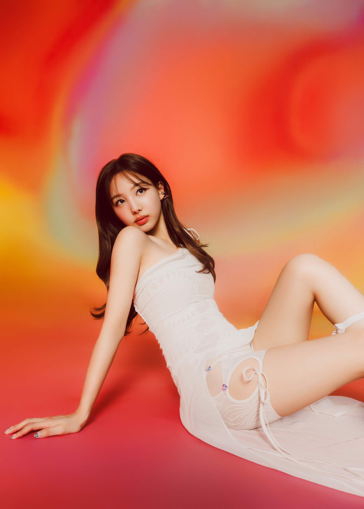
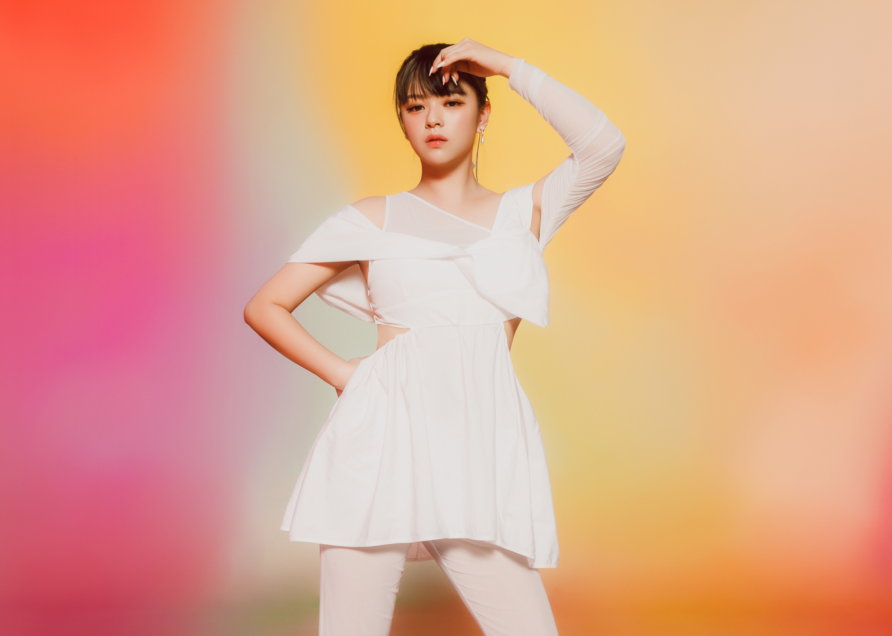
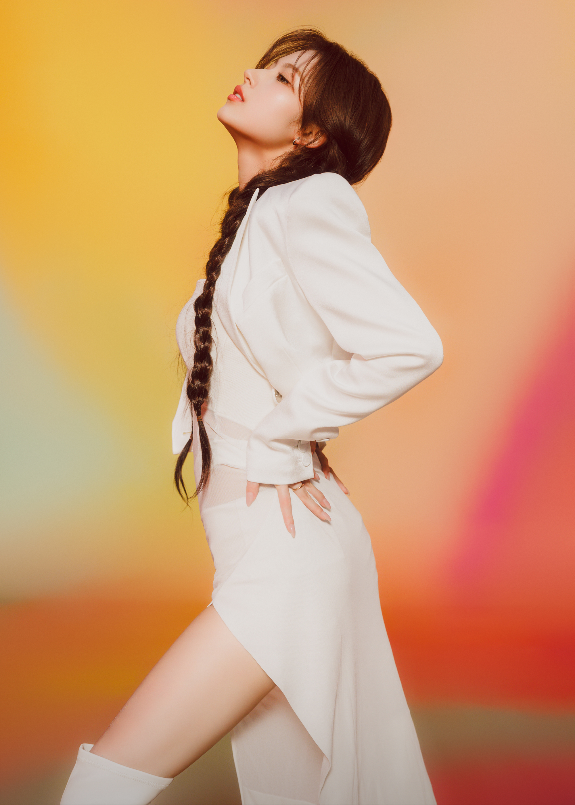
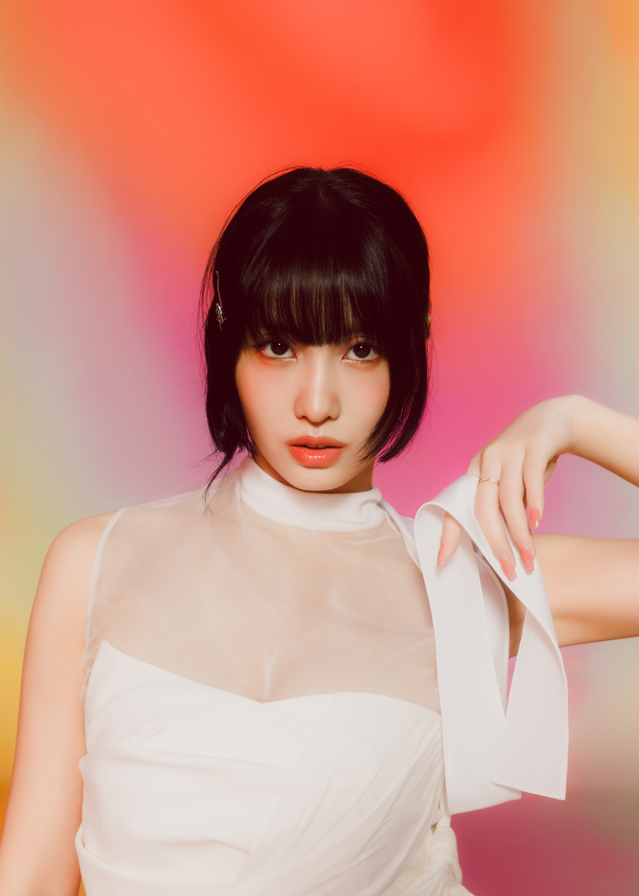
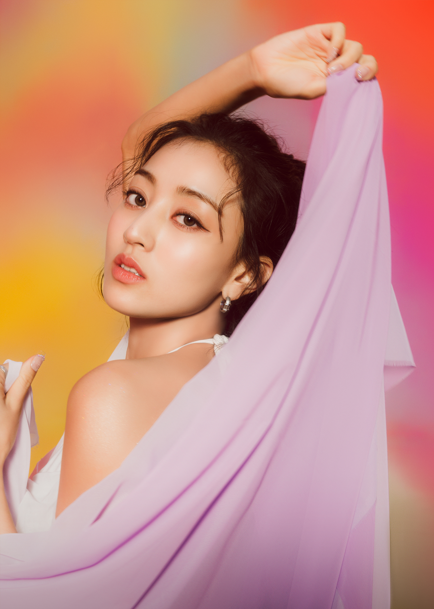
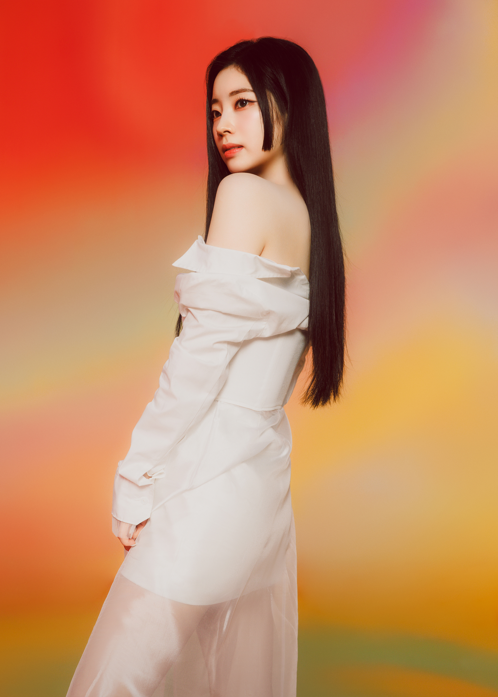
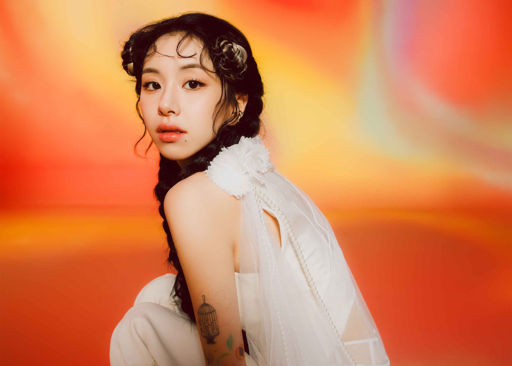
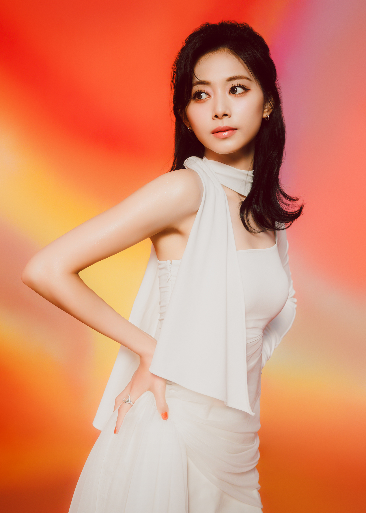

Nayeon

Nayeon es cantante y bailarina surcoreana que saltó a la fama como miembro del grupo femenino
TWICE.
Jeongyeon

Jeongyeon, es una cantante surcoreana bajo JYP Entertainment. Ella es integrante del grupo de chicas k-pop,
Twice, como vocalista secundaria del grupo. Al igual es una cantante, bailarina, Modelo, Compositora
Sana

Sana nació el 29 de diciembre de 1996 en Tennoji-ku, Osaka, Japón.
Es una cantante, bailarina, compositora, y presentadora japonesa
Momo

Nació 9 de noviembre de 1996. Es una cantante, rapera (sub-rapper), bailarina y compositora japonesa
Jihyo

Nació el 1 de febrero de 1997 en Guri.Es una cantautora, modelo y bailarina surcoreana.
Mina

Nació 24 de marzo de 1997. Es cantante, bailarina, modelo y compositora japonesa,
dahyun

Nació 28 de mayo de 1998. Es una actriz, rapera, cantante, compositora, modelo, bailarina y YouTuber
surcoreana.
chaeyoung

Nació 23 de abril de 1999. Es una cantante, rapera, modelo, bailarina y compositora
Tzuyu

Nació 14 de junio de 1999. Es es una cantante, modelo y bailarina taiwanesa.
Discografía
Albúmes:
-
2024 With YOU-th
-
2024 I got you
-
2023 Reay to be
-
2023 Moonligth sunrise
-
2022 Betwen 1&2
-
2021 Formula of love: O+T=< 3
-
2021 The feels
-
2021Taste of love
-
2020 Eyes wide open
-
202 More&more
-
2019 Feel special
-
2019 Fancy
-
2018 Yes or yes
-
2018 Summer nights
-
2018 What is love?
-
2017 lanzan Twicetagram
-
2017 Signal
-
2017 TWICEcoaster : LANE 2
-
2016 TWICEcoaster : LANE 1
-
2016 Page two
-
2015 The story begins